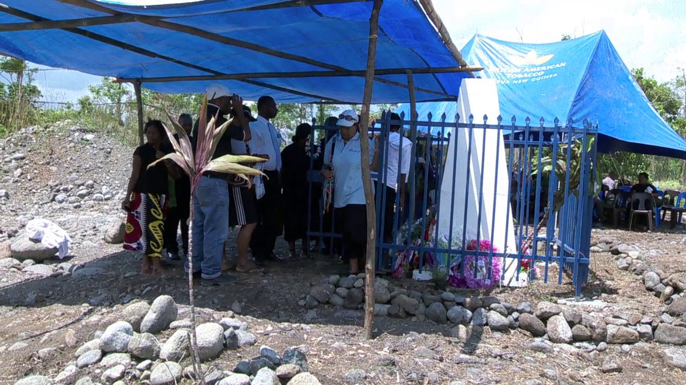

|  | Biography |
|---|---|
|
|
| More About Anki Sayong | |
|
The bearer of this letter has been known to be me for the last two years. Junior has successfully completed his grade 12 at Passam National High School in 2019. Whilst being a student he studied (English) Language & Literature, General Mathematics, Economics, Business Studies, History and Basic Computing Studies. The bearer of this letter has been known to be me for the last two years. Junior has successfully completed his grade 12 at Passam National High School in 2019. Whilst being a student he studied (English) Language & Literature, General Mathematics, Economics, Business Studies, History and Basic Computing Studies. |
|